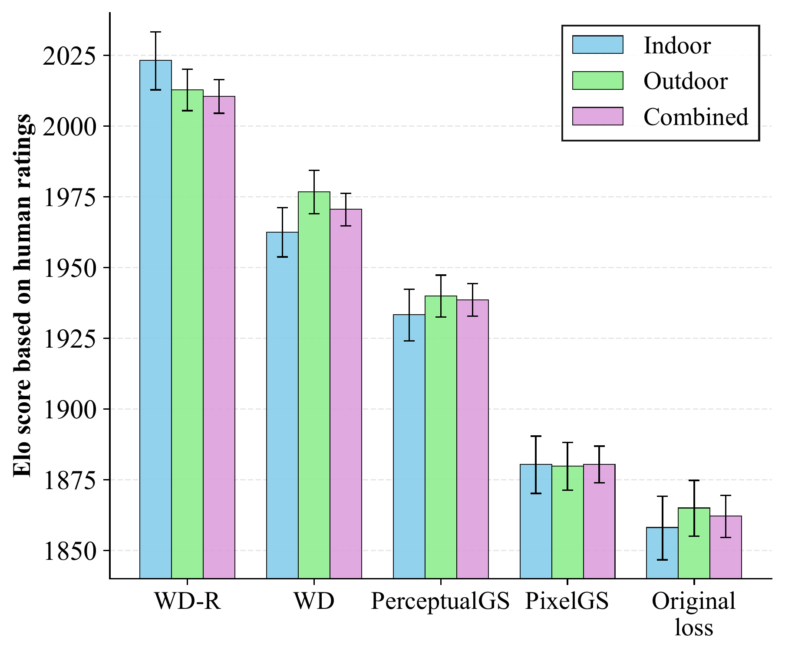
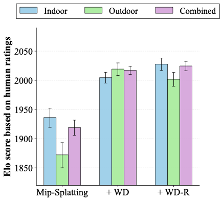
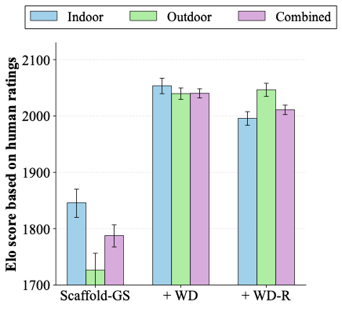
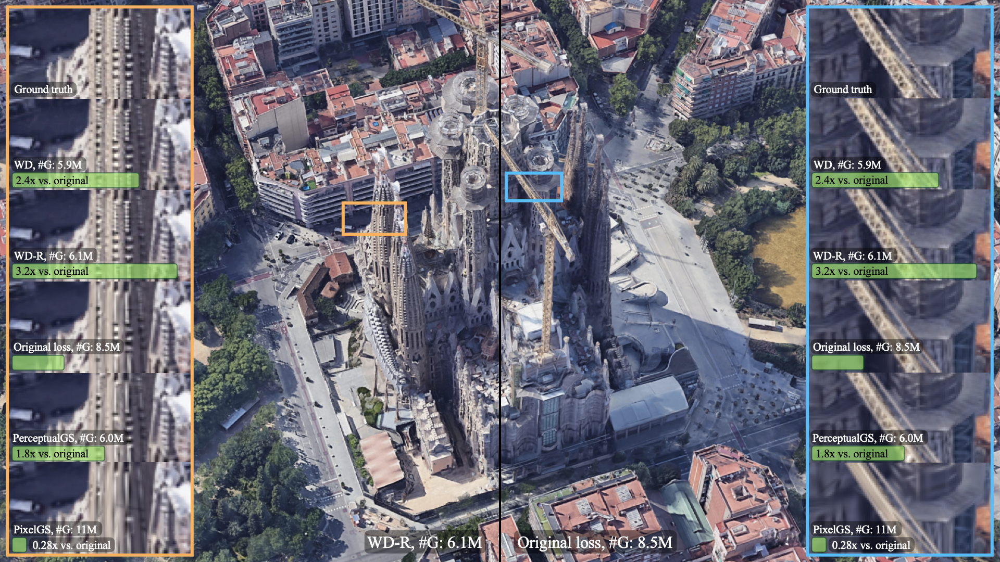

About
3D Gaussian Splatting (3DGS) models are typically trained with linear combinations of pixel-level distortion metrics, which can result in blurry renderings. To address this, we explore perceptual optimization of 3DGS, comparing three types of alternative distortion losses: the ubiquitous L1+SSIM loss used in the original 3DGS work, a composite loss consisting of several popular perceptual image metrics, as well as Wasserstein Distortion (WD), a recently proposed distortion metric based on local texture statistics. We conduct the first large-scale human subjective study on 3DGS, involving 39,320 pairwise ratings from 428 participants across novel views rendered from indoor and outdoor scenes. A regularized version of WD (which we call WD-R) emerges as the clear winner, excelling at recovering fine textures without incurring a higher splat count. WD-R is preferred by raters more than 2.3× over the original 3DGS loss, and 1.5× over the current state-of-the-art on perceptual metrics. We further demonstrate that WD-R serves as a drop-in replacement that generalizes across 3DGS frameworks: when applied to Mip-Splatting, WD-R is preferred 1.8× over its default loss, and when applied to Scaffold-GS, it is preferred 3.6×. In that regard, WD-R also consistently achieves state-of-the-art LPIPS, DISTS, and FID scores across various datasets. We find that this also carries over to the task of 3DGS scene compression, with ≈50% bitrate savings for comparable perceptual metric performance.
Human Preference Study
We report human preference results for indoor and outdoor scene datasets separately, and also for all scenes combined. The methods considered include WD, WD-R, PerceptualGS, PixelGS, and the original 3DGS loss. We exclude the composite loss from the human preference study, as it incurs a significantly higher number of splats for most datasets, making the comparison unfair.
As shown in the figure below, WD-R achieves significantly better Elo scores across all scenes. The difference in Elo of more than 150 as compared with the original loss suggests that the WD-R reconstructions were chosen by raters 2.3× as often. Compared with the state-of-the-art method, PerceptualGS, both WD and WD-R achieve better Elo scores (within the 95% error margin). Specifically, WD-R was preferred more than 1.5× over PerceptualGS (as suggested by Elo difference of 72).

Generalization to Other 3DGS Frameworks
To demonstrate that WD-R serves as a drop-in perceptual loss, we conduct additional human preference studies with Mip-Splatting and Scaffold-GS. For Mip-Splatting, WD-R achieves an Elo difference of 105.7 over the default loss (4,880 pairwise votes from 86 participants), meaning WD-R is preferred 1.8× as often. For Scaffold-GS, WD-R achieves an Elo difference of 223.2 over the default loss (3,720 pairwise votes from 93 participants), meaning WD-R is preferred 3.6× as often.


Overall, across all three frameworks (3DGS, Mip-Splatting, Scaffold-GS), WD-R is consistently preferred by participants over all other methods, totaling 39,320 pairwise ratings from 428 participants. These results confirm that WD-based optimization produces the most perceptually appealing rendered novel views for both indoor and outdoor scenes, and generalizes across different 3DGS architectures.

Citation
If you find our work useful, please cite:
@article{ozyilkan2026beyond,
title={Drop-In Perceptual Optimization of 3D Gaussian Splatting},
author={Ozyilkan, Ezgi and Chen, Zhiqi and Rippel, Oren and Ball{\'e}, Jona and Tatwawadi, Kedar},
year={2026}
}